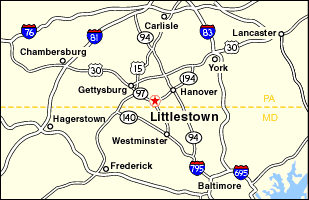

From Baltimore, MD
- Beltway 695 to Route 795 North
- Route 140 West to Route 97 North
- Right on Newark Street in Littlestown
Keystone Machine, Inc.
Contact Keystone Machine in Littlestown, Pennsylvania. Email your blueprints; AutoCAD and other formats are accepted.
Keystone Machine Inc.

Directions / 115 Newark Street